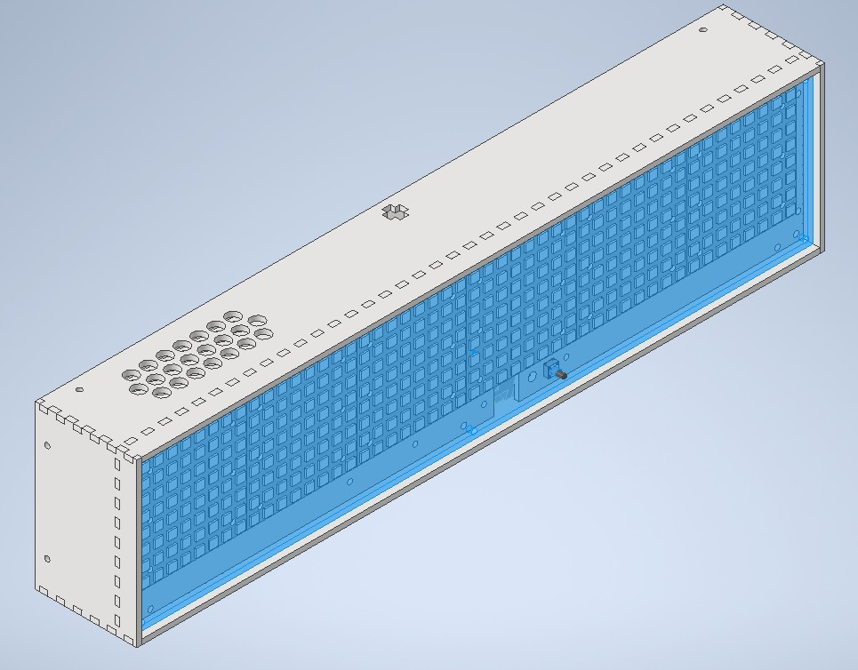
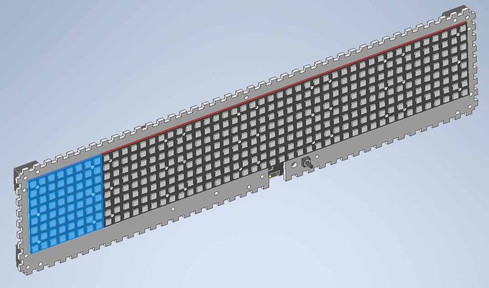
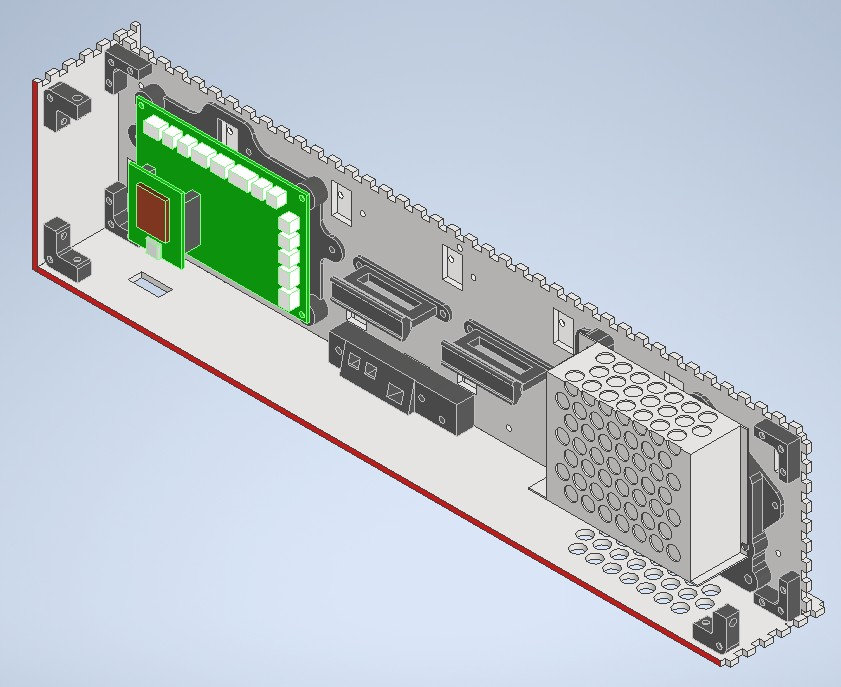
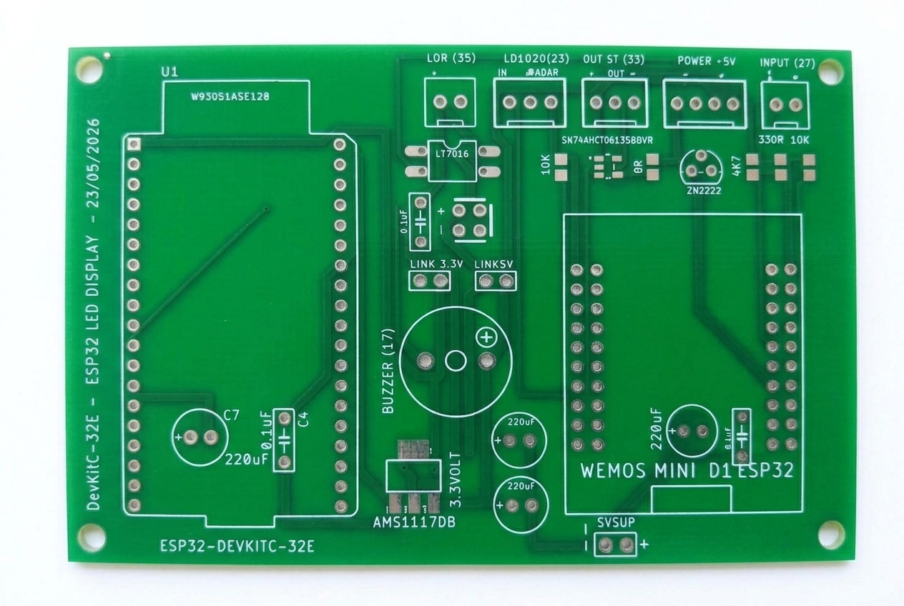
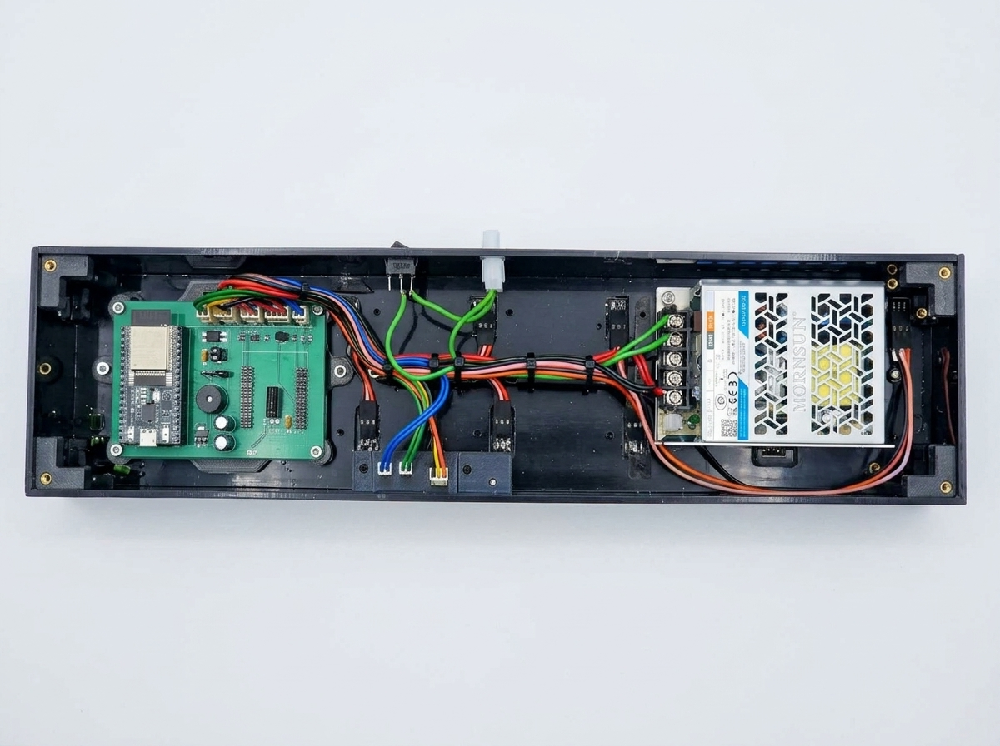

LED Display Board
A WiFi LED-matrix clock for the house: the time, plus birthdays, anniversaries and reminders scrolled on the day, with a buzzer, a radar sensor that wakes the display, and phone notifications through ntfy. Several clocks in one house keep each other in sync. Everything is set up from its own web pages on your WiFi — no cloud, no app. ESP32 (DevKitC or WEMOS D1 Mini ESP32).
Install on a new ESP32
Firmware version: …
- Plug the ESP32 into the PC with a USB data cable and press CONNECT above.
- If no port shows up: hold BOOT, tap EN (reset), release BOOT, and try again.
- Choose Erase for a new board, then Install (about a minute).
First start: choose your WiFi
- The new clock opens its own WiFi hotspot LEDClock-Setup (the blue LED blinks fast).
- Connect a phone to it — the setup page opens by itself (otherwise browse to
http://192.168.4.1/). - Pick your network, type the password, choose a fixed IP (recommended) or Automatic (DHCP), press SAVE & RESTART.
- Put the phone back on your normal WiFi and open
http://<the clock's IP>/.
More networks: OTHER → WIFI NETWORKS lists them with DELETE and ADD NETWORK (passwords are never shown). The clock tries the saved networks in range, strongest first. If none can be reached for several minutes, the hotspot opens by itself for 5 minutes, so you can add one from a phone.
Updates
On the clock's ABOUT page: CHECK FOR UPDATE compares its version with the one on this site; INSTALL FROM GITHUB downloads and installs it. Settings, birthdays and reminders are kept, and a failed download leaves the old firmware running.
No internet at the clock? Download ledclock.bin and use UPLOAD & INSTALL on the ABOUT page.
After installing
- SETTINGS: the clock's name, display brightness (light sensor), day / night colours, how long the display stays on after the radar sees someone, and the buzzer patterns.
- BIRTHDAYS / ANNIVERSARYS / REMINDERS: add your dates. Reminders can repeat daily, weekly, monthly or yearly, and can be limited to REMINDER VALID PERIODS (e.g. school terms).
- NTFY: free push notifications on your phone — install the ntfy app and choose your own topic names.
- ABOUT → CLOCK NETWORK: give each clock the IPs of the others, and they share everything.
- DISK TOOLS: export everything to CSV now and then, and download the files (FILES page) as a backup.
Hardware
| Part | GPIO | Notes |
|---|---|---|
| LED matrix data (WS2812) | 33 | through a 3.3 V→5 V level shifter |
| Buzzer (2N2222) | 17 | |
| Radar presence sensor | 23 | digital output, HIGH = presence |
| Push-button (stop message) | 27 | active HIGH |
| LDR light sensor | 35 | ADC1 |
| Status LED | 2 | on-board blue LED; fast blink = WiFi connecting / setup hotspot |
To build one: the build guide and Build_Files — STL parts to 3D-print, DXF panels to laser-cut from 3 mm acrylic, the PCB (Eagle + Gerber ZIP) and the parts list with where to buy everything. The source code is in the GitHub repository.




